Menu Shortcuts in C# .NET
<< Continues from the previous lesson
Menus usually have shortcuts. These are the underlined letters that you see when you click a menu. They sometimes have a shortcut key combination to the right of the menu item. For example, here's the File menu from Visual C# with all the underlines and key combinations showing:
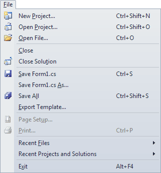
To see these, you need to hit the ALT key on your keyboard. When you see the underlined letters, press the key that corresponds to the underlined letter. Pressing the "F" key, for example, will then cause the menu to drop down. Pressing any of the underlined letters on the File menu will implement that menu item. (In our edition of Visual C# Express, pressing the letter P only switches back and forward between the first two items. The other letters work OK, though.)
You can also use the key combinations to the right of the menu item. Holding down CTRL + SHIFT + N at the same time will cause the New Project dialogue box to appear.
To add shortcuts to your own menus, click your File item to select it. Now have a look at its Properties in the Property Window. Scroll down until you locate the text item:
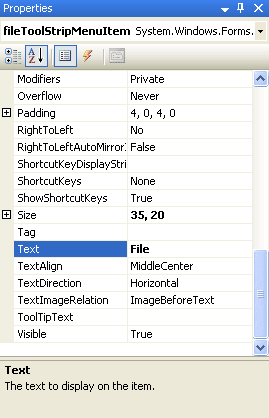
To add an underline to any of the letters, you use the ampersand symbol (&) before the letter you want to use as a shortcut. In the image below, we've added an ampersand just before the "F" of File:
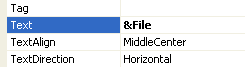
And here's what the menu looks like with the ampersand added:
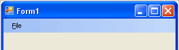
As you can see, there's now a line underneath the letter "F". In the next image, we've added more underlines to the rest of the File menu:
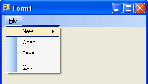
Add the same underlines to your own File menu. Remember: click a menu item to select it, locate the text property, and add an ampersand before the letter you want to use as a shortcut. When you run the programme, don't forget to press the ALT key on your keyboard, otherwise you won't see the underlined letters.
The key combination shortcuts are just as easy to add. Click on your New menu item to select it. Locate the ShortcutKeys Property in the Properties Window:
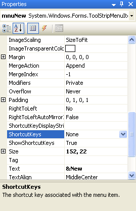
At the moment, it's set to None. Click the down arrow to see the following options:
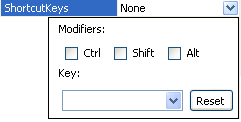
The Modifiers are the CTRL, Shift, and ALT keys. You can select one or all of these, if you want. To activate a shortcut, you would then have to hold down these keys first. So if you want your users to hold down the CTRL and Shift keys, plus a letter or symbol, then you would check the relevant Modifier boxes above.
The letters and symbols can be found on the Key drop down list. Click the down arrow to see the following:
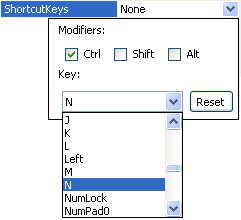
In the image above, we've gone for the CTRL modifier, and the letter "N". Clicking back on the menu, here's what it now looks like:
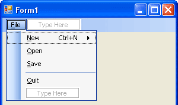
As you can see, the shortcuts for the New menu item are an Underline, and Ctrl + N.
Have a look at the next image, and add the same Shortcut Keys to your File menu:
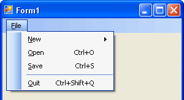
The ones you are adding are the final three: Open, Save and Quit. We'll get to coding the menu items shortly, but here's an exercise to complete. (Don't skip this exercise because you'll need the menu items!)
Exercise
Add an Edit menu to your menu bar with the following items:
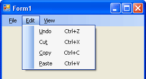
Include the underline shortcuts, and the key combination shortcuts. For the Name Property of each menu item, use the following:
Undo: mnuUndo
Cut: mnuCut
Copy: mnuCopy
Paste: mnuPaste
Exercise
Add a View menu to your menu bar with the following items:
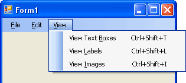
Again, include the underline and key combination shortcuts. Set the Name Property of your menu items to the following:
View Text Boxes: mnuViewTextBoxes
View Labels: mnuViewLabels
View Images: mnuViewImages
OK, it's now time to do some coding for the menu items you have created.